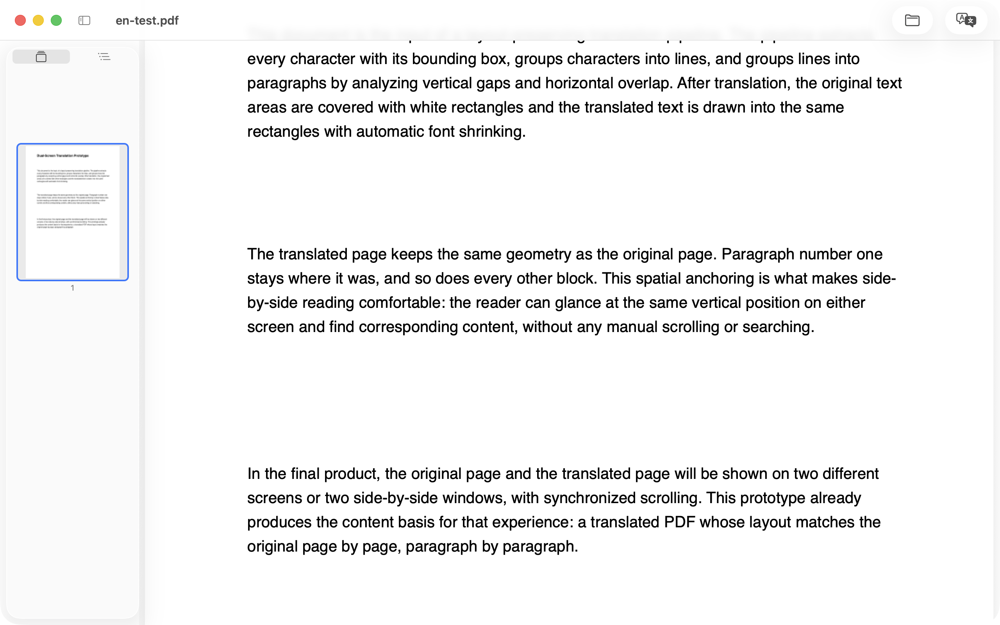
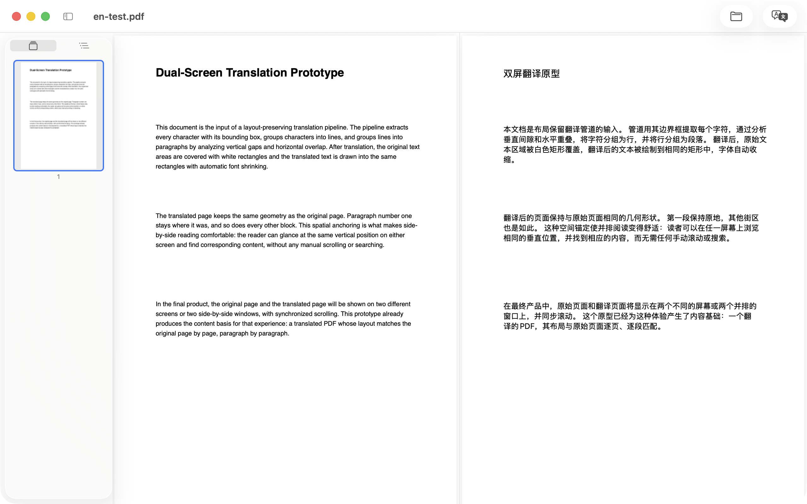

步骤 01 · 阅读
干净、极简的阅读器
把 PDF 拖进窗口，或按 ⌘O。连续滚动阅读，侧栏可收起，缩略图与大纲随时跳转，自由缩放、页码标签、打印 ⌘P——加密 PDF 弹窗输入密码即解锁。

KenjaPDF 是一款 Mac 双语对照 PDF 阅读器：拖入文档，点一下， 原文译文双栏对照——滚动同步、版式保留， 翻译全部在设备本地完成，一个字节都不上传。

从外文 PDF 到双语阅读，不用离开应用——读完、翻好、导出。
把 PDF 拖进窗口，或按 ⌘O。连续滚动阅读，侧栏可收起，缩略图与大纲随时跳转，自由缩放、页码标签、打印 ⌘P——加密 PDF 弹窗输入密码即解锁。

选择语言对——源语言自动检测——点「翻译」。Apple 系统引擎在本地翻译整篇文档，译文在原文旁边展开、滚动同步。一个按钮在双栏 / 只看译文 / 只看原文间切换；翻完还能导出纯译文或原文译文交替的双语 PDF。
不是云端后台——是一个只把两件事做好原生 Mac 工具。
翻译跑在 Apple 系统引擎上，就在你的 Mac 里。文档从不上传——首次翻译某个语言对时，macOS 会自行下载一个很小的语言包。
源语言自动识别（也可手动指定），目标语言默认跟随系统首选。支持列表直接来自 macOS，语言名称按你的系统区域显示。
原文与译文双向同步滚动，一边缩放另一边跟随。一个按钮循环切换双栏对照 / 只看译文 / 只看原文。
译文逐段画回原段落的位置，页边距、几何结构与矢量图全部保留——译文读起来就是原文的版式。
数学行（LaTeX、MathType、Cambria Math 字体）自动识别、原样保留，周围的正文照常翻译。为论文与文献而设计：宁可少翻一行，不能弄丢公式。
导出纯译文 PDF，或原文 / 译文逐页交替的双语对照版——在任何设备阅读、在预览里批注、或分享给别人。
KenjaPDF 像一件称手的工具——在你机器上干活，不与任何人交谈。翻译跑在 Apple 的本地引擎上，文档从不出你的 Mac。没有需要登录的账号，也就没有可泄露的东西。
不会。阅读、版面分析与翻译全部在你的 Mac 上完成——翻译用的是 Apple 的系统本地引擎。无账号、无统计、无追踪，App Store 隐私标签为「不收集数据」。
20+ 种语言，由 macOS 系统翻译驱动——支持列表直接来自你的系统。源语言自动识别（也可手动指定），目标语言默认跟随系统首选。首次翻译某个语言对时，macOS 会自行下载一个很小的语言包。
不需要。翻译用的是 macOS 内置引擎——无登录、无 API Key、无订阅。缺少语言包时，KenjaPDF 会引导你完成一次性的系统下载并自动重试。
会。译文逐段画回页面临本上原段落的位置，几何结构、页边距与矢量图全部保留。数学行会被自动识别并原样保留——公式在翻译后完好如初，读论文、读文献尤其重要。
KenjaPDF 翻译的是 PDF 里的文本层。纯图片、没有内嵌文字的扫描件在本版中无法翻译——请先对扫描文档做 OCR。
设备本地翻译需要 macOS 26 或更高版本（使用 Apple 翻译框架）。阅读、大纲与导出在 macOS 13 及以上可用。